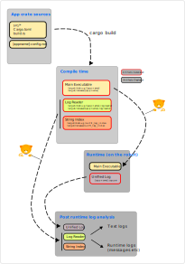
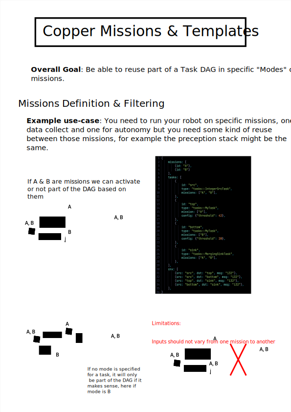

Copper Wiki¶

Copper is a deterministic robotics runtime written in Rust. Think of it as a "game engine for robots": describe your system declaratively, compile the schedule, and run deterministically from cloud simulation down to embedded controllers.
Why Copper - ⚡ Sub-microsecond latency with a zero-alloc, data-oriented runtime. - ⏱️ Deterministic replay for debugging and certification. - 🧠 Interoperable with ROS 2 via bridges. - 🪶 Runs anywhere from x86 servers to bare metal.
Ready to get started? Check out the README or jump into Build and Deploy a Copper Application.
What's New¶
Start Here¶
| Topic | What you'll get |
|---|---|
| Project Templates | Scaffold a new Copper project quickly. |
| Copper Application Overview | A minimal task graph and runtime walkthrough. |
| 🚀 Build and Deploy a Copper Application | Project structure, build artifacts, and deployment flow. |
| ⚙️ Copper Configuration file Reference | The RON schema for tasks, messages, and connections. |
| Copper Runtime Overview | Core runtime concepts and SDK capabilities. |
| 🗺️ Copper Configuration and Mission Visualization | Render task graphs and mission definitions. |
| 🧭 Copper Tasks lifecycle overview | How tasks run, pause, and serialize state. |
| 🧩 Modular Configuration | Split big configs into reusable chunks. |
| Task Automation with just | Repeatable task helpers across the repo. |
| 🌉 Copper Bridge concept | Link Copper to external systems and protocols. |
| 🧰 Resources | Wire hardware and shared services into tasks and bridges. |
| 🔧 Baremetal Development | Running Copper as a bare-metal runtime. |
| 🖥️ Supported Platforms | Desktop, mobile, and embedded targets. |
Visual Overview¶
| Task Lifecycle | Build and Deploy | Missions |
|---|---|---|
 |
 |  |
Resources¶
- 🧱 List of available components
- SDK Features
- FAQ
- Roadmap
- 📚 API Documentation on docs.rs
- 🧪 API
- 📦 Main crate on crates.io
- 💻 Source code on GitHub
- 🛠️ Contributing guide